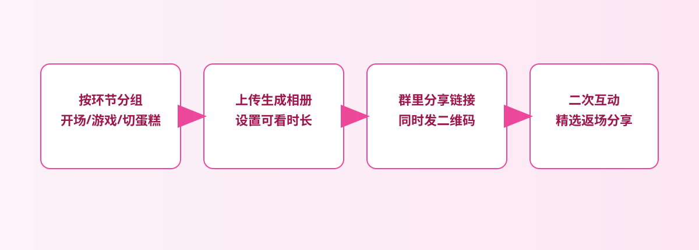
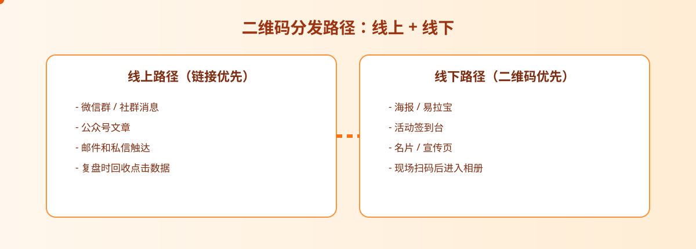

活动路径
先选一组精选照，再给大家一个能马上打开的入口
生日会照片不需要一开始就追求完整大图库。先整理一组值得看的精选照，再生成统一入口，会比在群里反复发图轻松得多。

生日会场景很典型：照片拍了很多，但真正要分享出去的往往只是其中一组。大家会马上问“照片在哪”，如果你只能靠群里反复补图，体验就会很碎。更好的做法，是快速给亲友一个入口，让想看的人马上看，想收的时候也能及时收。
生日会主理人、亲友组织者、活动拍摄者，以及需要会后快速发图的人。
活动精选照、现场回顾、会后亲友分享，不追求复杂协作，只追求轻松好发。
因为生日会这种轻场景里，最重要的不是工具炫，而是分享动作别打断气氛。
生日会这种轻松场景，更需要“少操作、少解释、少补发”，而不是更复杂的后台系统。
提示：下面的流程图和配图都可以点击放大，细节会更清楚。
生日会照片不需要一开始就追求完整大图库。先整理一组值得看的精选照，再生成统一入口，会比在群里反复发图轻松得多。


生日会结束后，亲友常常只想马上看图。你可以在群里发链接，也可以把同一个入口转成二维码，让现场物料或会后回顾页自然承接。
如果活动一结束，大家都在群里问照片在哪，一个统一入口会立刻减少你的重复劳动。你发的是“去这里看”，而不是“我再补你几张”。
生日会本来就是轻松场景，所以分享入口也不需要太重。只要大家能快点看到照片、顺手转发给亲友，就已经很够用。
这一步很关键，因为它让你马上拿到可以继续分发的入口。会后不管是补发链接还是贴二维码，都从这里开始。
生日会照片通常是阶段性内容。活动结束一阵子后，如果不想继续开放，直接让入口失效会比把旧图长期留在外面更安心。
生日会照片分享最好的状态，不是群里刷满图片，而是大家很快就能看到，活动结束后你也很快就能收口。